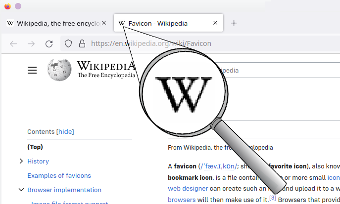

Favicon
Favicon — іконка сайту, що зображається поряд з адресою сайту в адресному рядку, біля заголовку сторінки у вкладці або в списку закладок браузера.
Традиційно використовується зображення розміром 16×16 пікселів у форматі файлу ICO, який зазвичай розташовується в корені сайту з назвою favicon.ico.